Auto di cortesia
Mentre ripariamo la tua, ti diamo un'auto sostitutiva per tutto il tempo che serve. La scegli in sede tra i modelli disponibili.
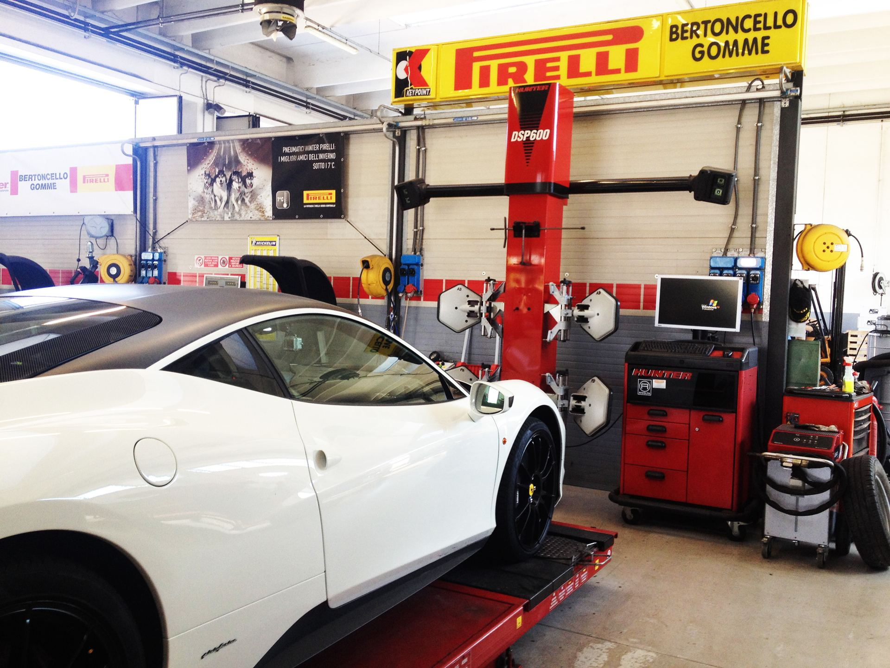
È la stagione delle gomme invernali: prenota il cambio.
A San Martino di Lupari e ad Asolo, per auto, furgoni e mezzi pesanti. Driver Center Pirelli, con il furgone attrezzato se non puoi venire tu.
Sei verso Asolo? 0423 524003
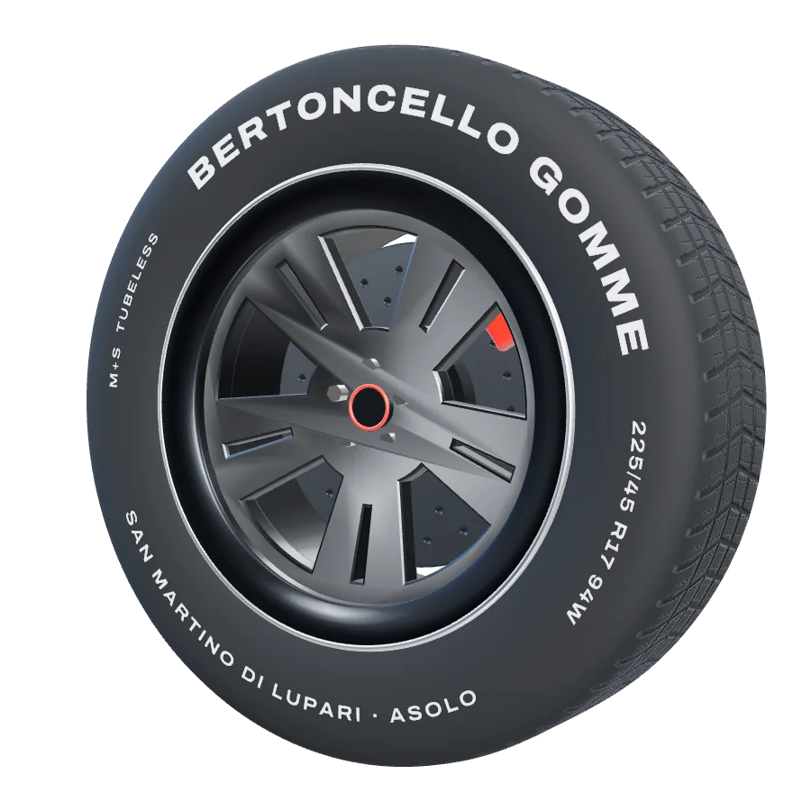
Ogni pezzo è un lavoro che facciamo tutti i giorni. Scorri e guardalo staccarsi.
Estivi, invernali e quattro stagioni di tutte le marche. Montaggio, riparazione e deposito stagionale al coperto.
Cerchi in lega, in alluminio e cromati. Con l'omologazione dei cerchi OZ ti diciamo fino a che misura puoi arrivare sulla tua auto.
Ruote bilanciate: niente vibrazioni sul volante e gomme che si consumano in modo regolare. Con l'azoto la pressione resta stabile più a lungo.
Dischi e pastiglie, tagliando, diagnosi elettronica, clima, revisione e bollino blu. All'auto ci pensa l'officina meccanica.
Controllo strumentale dell'assetto: le ruote tornano dritte, l'auto tiene la strada e le gomme durano di più.
Montata, equilibrata, pronta.
Prenota il cambio gomme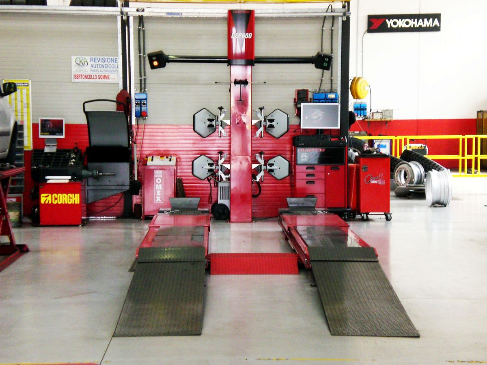
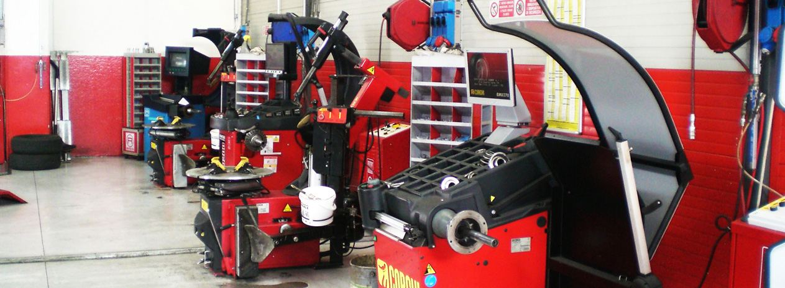
Ampia scelta a prezzi competitivi e assistenza qualificata: il personale si aggiorna con corsi presso le case costruttrici.
Strumentazioni moderne e personale qualificato per una struttura completa: porti l'auto per le gomme e, se serve, ci pensiamo noi anche al resto.
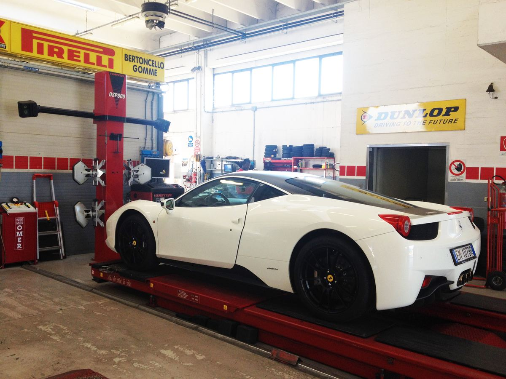
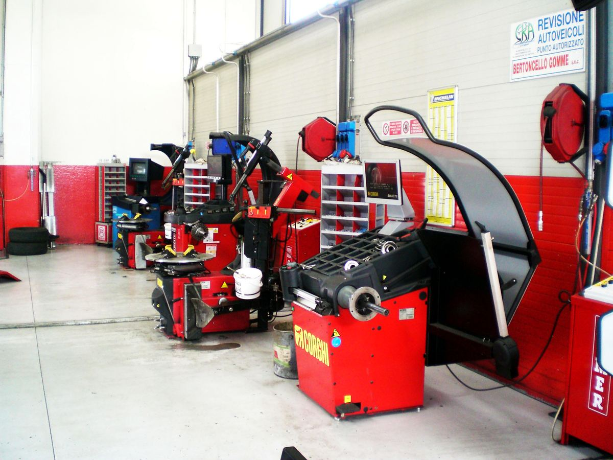
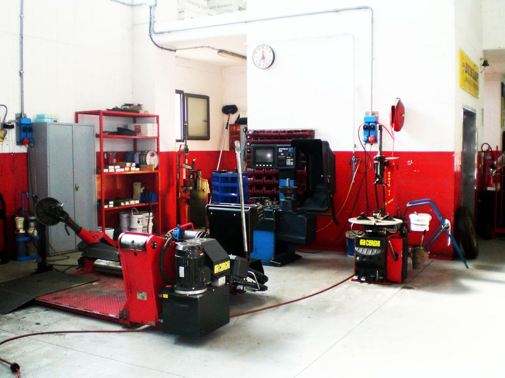
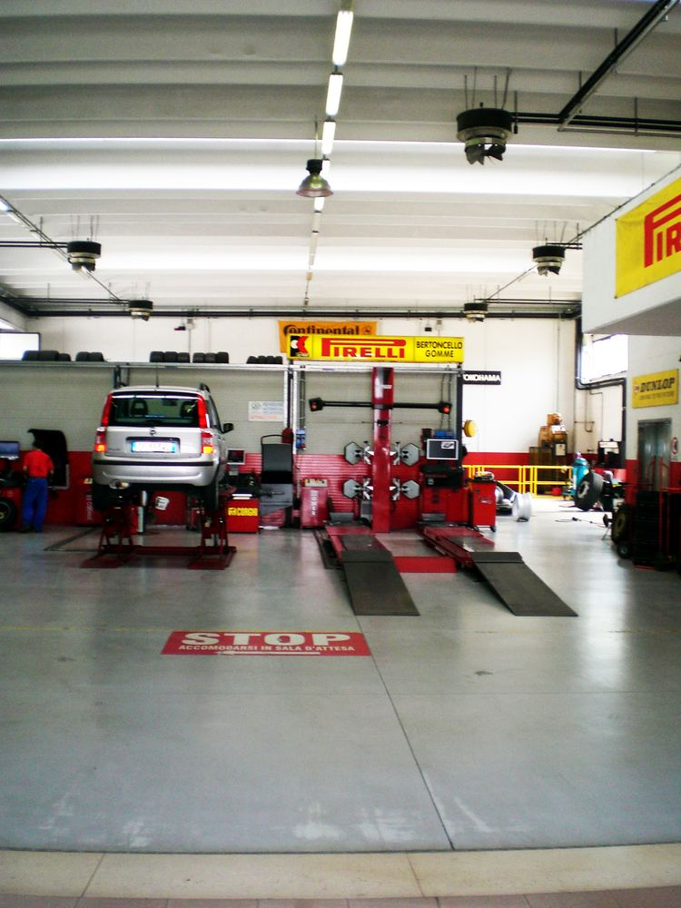
Il furgone attrezzato porta lo smontagomme dove serve: sul piazzale dell'azienda, in cantiere, sotto casa. Anche per le gomme dei camion.
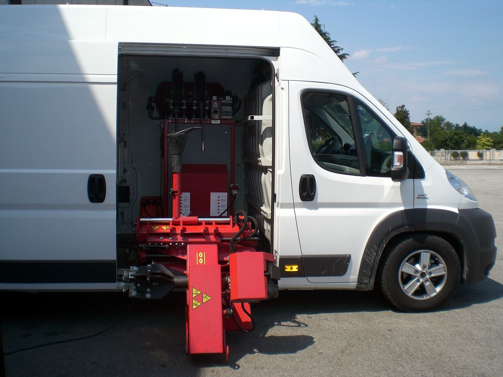
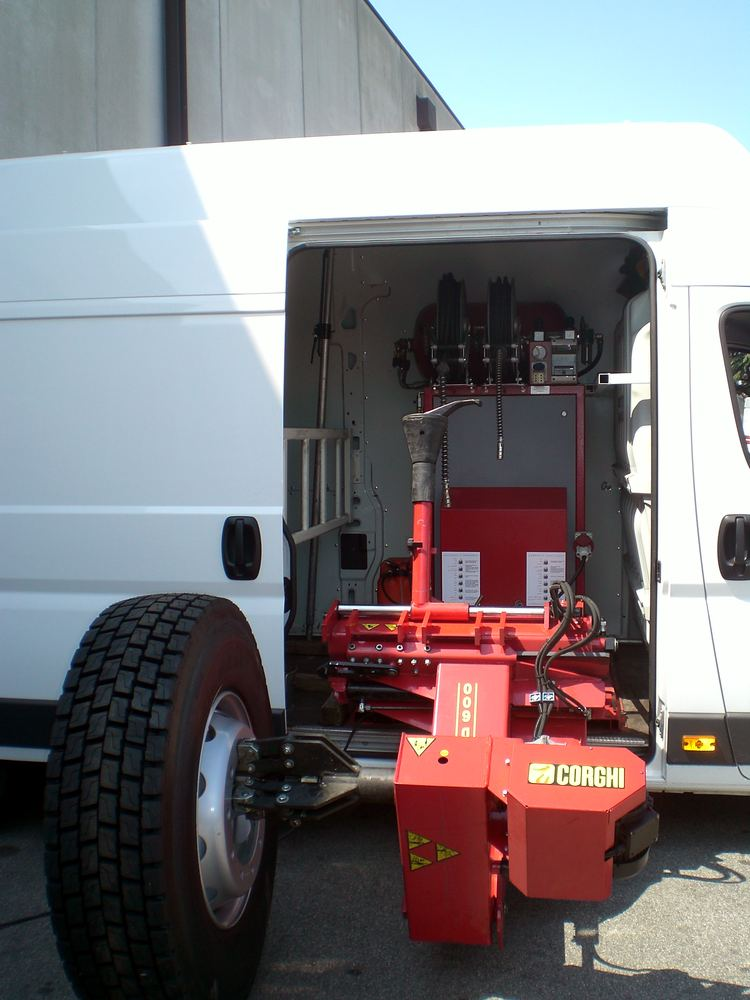
Mentre ripariamo la tua, ti diamo un'auto sostitutiva per tutto il tempo che serve. La scegli in sede tra i modelli disponibili.
Auto e veicoli commerciali con tariffe giornaliere, per un trasloco, un viaggio o un picco di lavoro.
Un canone mensile fisso al posto dell'acquisto: l'auto e gli optional che vuoi, da 2 a 5 anni, fino a 160.000 km.
4,6 su 105 recensioni a San Martino di Lupari, 4,5 su 44 ad Asolo.
Da oltre vent'anni mi affido a questo gommista. Trovo prezzi ottimi, lavoro preciso, tempi rapidi. Cambia le gomme in modo accurato e ti consegna l'auto in perfetto ordine.
Per la sostituzione delle gomme del Pajero ho trovato uno staff veloce, gentile, competente e disponibile, a cominciare dalla signora della reception.
Alessandro, miglior gommista mai conosciuto: professionale, veloce, ordinato e tempi record. Prezzi al top.
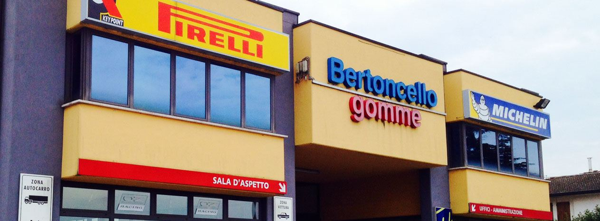
Sede principale
Via Castellana, 148
35018 San Martino di Lupari (PD)
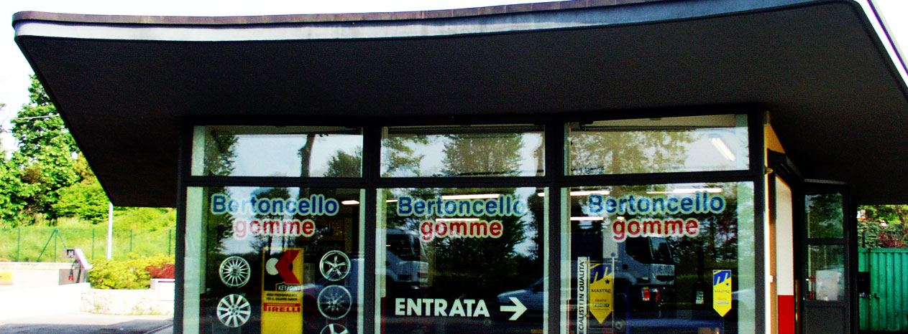
| Lunedì – venerdì | 8:00 – 12:00 14:30 – 18:30 |
|---|---|
| Sabato | 8:00 – 12:00 |
| Domenica | Chiuso |
Orari della scheda Google, uguali nelle due sedi. Per i festivi chiama prima.
Scrivici: info@bertoncellogomme.it
Lasciaci due dati e la sede che preferisci: ti rispondiamo per fissare giorno e ora. Se hai fretta, chiama.
La misura delle gomme è scritta sul fianco, per esempio 205/55 R16. Se la conosci, scrivila: arriviamo con il preventivo pronto.